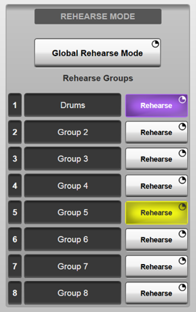
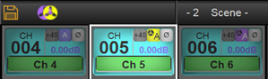
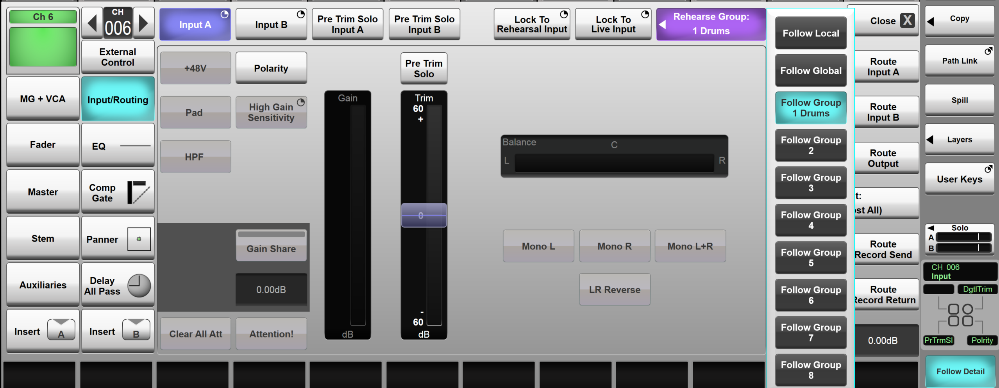
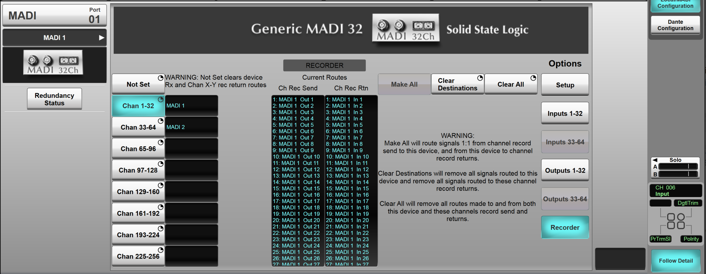

Multitrack Recording and Playback (Recorder and Rehearse Mode)
Each Channel path of an SSL Live console comes equipped with Record Send and Record Return points at the top of the signal chain (post Input A/B selection, pre Trim). The Record Send point is always active for routing to a multitrack recording device. The Record Return point can be switched into circuit on multiple channels simultaneously, as described below. Record patch routing can be performed from the Channel View Input/Routing Detail View, XY Routing, or the new bulk Recorder routing from the IO menu.
V5.2 and higher:V5.2 software delivers greatly enhanced 'Rehearsal and Recorder' functionality, which includes multiple switching groups, flexible routing and locking override functions. Eight freely assignable switching groups can be used to manage multiple groups of instruments or even different acts within the same showfile, rehearsals can become very dynamic with fast comparisons. Combined with global and local switching options, plus override "lock to" functions per channel, switching individual channels between live and playback is quick and simple.
Bulk routed recorder IO is now handled via generic MADI and Dante Expander modules, the consoles concept of a "Live Recorder" is removed. Free routing of the channel record sends, and returns allows the use of any IO, and any console path to be recorded providing very flexible recording and rehearsal playback options.
The previous live recorder concept included fixed but maintained routing auto incrementing channel record send and return routing. This had the advantage of automatically updating routes when channel formats or channel order were changed, but the disadvantage that the very fixed routing that could not be altered. This new version gives the power to the user to manage routing however they wish, but does not have any automatically maintained routing, the two features being mutually exclusive. New bulk routing commands from the MADI and Dante IO devices, provide a fast way to route all channels after they have been configured in console config. If channel formats are subsequently changed, the operator will need to monitor, and update required recorder routes.
Showfiles saved in an earlier version of software will update when loaded and subsequently saved in Live V5.2. Live recorders will be updated to generic MADI IO. Console channels previously corresponding to recorder ID, will automatically be added to the corresponding new switching group. New showfiles will default to all channels as part of the global switching group and start with blank record send and return routing.
Rehearsal Mode Switching Groups
Rehearse Mode buttons are available from the MENU > Setup > Options > USER tab. These allow playback of recorded audio through the console channels, allowing engineers to test the system or performers to rehearse alongside previous performances. There are eight possible rehearse switching groups, allowing different sets of channels to be switched when necessary. The groups can be named with a double tap of the text box (e.g. Drums). Each group has an associated colour used to identify the switch group state, both per channel strip and in the status bar.


Note: Rehearse mode can also be triggered from User Keys and Events System; see the User Keys Options or Event Manager section.A Global Rehearse Mode button (press & hold to activate) switches all paths in Follow Global or a Follow Group mode (not Follow Local mode), in and out of Rehearse mode simultaneously. Channel Paths are assigned to Global, Group or Local switching in the Input Channel Detail View.

A simple setup may keep all channels as Follow Global, providing a bulk switch for every channel on the console. Separate groups provide user defined switching, typically across types of instruments. Follow Local provides a way to remove a channel easily and permanently from the switching groups, useful for effect returns or sources always fed from playback devices routed to the channel input. These assignments are all stored and recalled with the showfile.
A pair of Lock to Live Input and Lock to Rehearsal Input override functions force a path to the live input or the record return. Turning one lock on cancels the other, turning either lock off does not turn to the other lock on. The "lock to" functions can be used at any time, even when a path is in follow global or follow group mode.
When a path is in Lock to Live or Lock to Rehearsal that paths input is NOT changed by group or global switching. The lock to switch states are not saved in the showfile or scene. The "lock to" functions can provide a fast way to force a channel to live or rehearsal/replay input on that run through the show. Perhaps one musician is late for soundcheck, or one instrument malfunctions; switching this one channel to playback allows the show or rehearsal to continue while it is resolved. If the singer wants to run through a few more times after soundcheck, their mic can be locked to live input while rehearsal is engaged for everyone else.
Recorder IO
The ability to manual route channel record sends and returns, allows any IO to be used as the recorder and rehearsal replay machine. Routing is performed in the same way as any other signal patching and is stored and recalled with showfiles.
MADI and Dante Expander connections can be configured as "recorders." Recorders are given a channel block (e.g. 1-32, 33-64, ... @96 kHz). When assigned channel blocks bulk routing actions for both the IO and the channel record send/return can be performed. This allows a recorder IO and routing to be configured quickly once channel allocation in
The 1:1 routing is based on incremental signals across the console channel paths, i.e., a stereo channel path will use 2 signals on the IO.
Make is only available if all signal destination points are clear to be made. The clear functions are only available if there are routes to be cleared. It is useful to remember routing is directional. One to many routing is simply distribution and easily achievable with patch routing. Many to one routing requires summing/mixing and therefore needs busses, so not part of any patch routing feature. (Signal receiving points need clearing or replacing to be sent different signal.)

Setting an IO device to Not Set automatically actions the Clear Destinations function, freeing up the channel record returns and the IO outputs to be routed from other signals. The channel record sends, and IO inputs could have been legitimately routed to other destinations, not part of the recorder, and therefore are not cleared when the recorder IO is changed to Not Set.
When the Dante expander is set to a recorder it will be forced to use all its channels as VTLs (Virtual Tie Lines), rather than dynamic Dante routing
Suggested Use Case and Workflow
The recorder IO options make it simple and quick to record and playback a rehearsal when configuring a console from scratch or setting up new recording devices.
- After building your console config...
- Set device recorder channel ID: e.g. Chan 1 - 32
- Make All routes*
- Repeat step 1 and 2 for other devices.
- To listen to the playback during a rehearsal enable Global Rehearsal Mode
*This applies when the starting point is that the recording device has no receive routes and channel record return has no routes connected to it. If a recorder or the channel path record return has already been routed to, use Clear Destination before Make All in step 2.
If devices have previously been used for recorders, but these assignments require changing there are several options:
- Set the console IO port to none - removing recorder assignments and routing - then chose MADI and configure the recorder options.
- Set the recorder to not set - removing recorder assignments and routing, then chose new channel blocks.
- Reassign channel block for each recorder clearing and making new routing as you go.
The recorder options in the MADI and Dante Expander IO pages are to provide bulk routing and fast setup capabilities, XY and channel view routing can also be used to connect signals between a recording device and the channel record send / returns
If channel formats are subsequently changed, the operator will need to monitor, and update required recorder routes.
Note: The Record Sends remain active at all times. This means that 'live' signals from stage will continue to be sent to the recording device, even when in Rehearse Mode.Useful Links:
Local/MADI I/O ConfigurationSetting Up Dante
Installation Guide
Index and Glossary